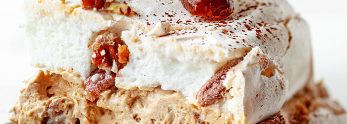
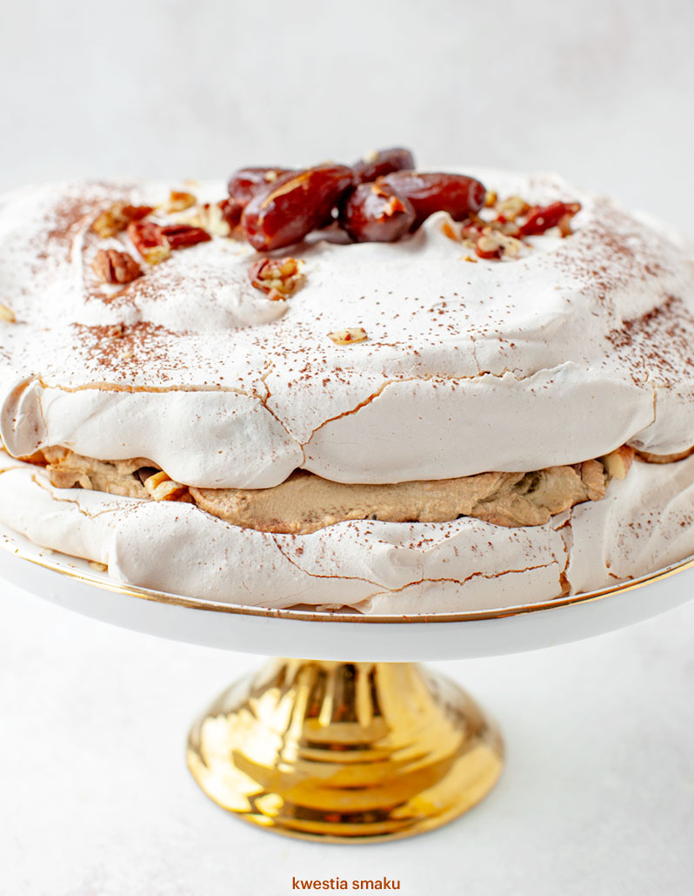

Tort bezowy Dacquoise
Z kremem kawowym lub kajmakowym, daktylami i orzechami
Pyszny Bezowy Tort Dacquoise (czyt. dakłas) z masą kawową, daktylami i orzechami pekan lub włoskimi.
Składniki
| Blaty Bezowe | Krem Kawowy | Dodatki |
|---|---|---|
| - 6 białek | - 2 łyżeczki kawy rozpuszczalnej | - kilka suszonych daktyli |
| - szczypta soli | - 1 op. śmietan-fix (opcjonalnie) | - garść orzechów pekan lub włoskich |
| - 300 g cukru | - 250 g mascarpone (zimnego) | - kakao |
| - 1 łyżeczka soku z cytryny | - 200 g śmietanki 30% (b. zimnej) | |
| - 2 łyżeczki mąki ziemniaczanej | - 2 łyżki cukru | |
| - garść orzechów pekan lub włoskich |
Blaty Bezowe
- Piekarnik nagrzać do 160 stopni C z termoobiegiem. Dwie blachy z wyposażenia piekarnika lub blachę i kratkę wyścielić papierem do pieczenia.
- Białka ubić na sztywno z dodatkiem soli, następnie stopniowo po łyżce dodawać cukier, jednocześnie cały czas długo i cierpliwie ubijając, aż cały cukier się rozpuści.
- Gdy piana będzie gęsta i błyszcząca dodać sok z cytryny oraz mąkę ziemniaczaną i miksować jeszcze przez minutę. Dodać posiekane orzechy i delikatnie wymieszać łyżką.
- Pianę rozdzielić pomiędzy dwie blachy do pieczenia (lub blachę i kratkę) tworząc okręgi o średnicy ok. 23 cm. Wstawić do piekarnika (na wyższy i niższy poziom).
- Piec przez 5 minut, następnie zmniejszyć temperaturę do 120 stopni C z termoobiegiem i piec przez 1 godzinę i 30 minut. Po upieczeniu wyłączyć piekarnik, uchylić drzwiczki i pozostawić blaty na ok. 15 minut. Następnie wyjąć i całkowicie ostudzić.
Krem Kawowy
- Kawę zaparzyć w 1 łyżce wrzącej wody, wymieszać, całkowicie ostudzić, następnie (opcjonalnie) wymieszać ze śmietan-fixem.
- Mascarpone, śmietankę i cukier umieścić w misie miksera i ubijać przez ok. 2 minuty, aż krem zwiększy swoją objętość i będzie bardziej puszysty. Dodać kawę i zmiksować. Wymieszać łyżką z pokrojonymi daktylami oraz orzechami (trochę można zostawić do dekoracji).
- Krem wyłożyć na jeden blat bezowy, przykryć drugim krążkiem. Posypać kakao i udekorować odłożonymi bakaliami.
Koszty
- Jajka - 5 zł
- Cytryna - 1 zł
- Kawa - 2 zł
- Śmietan-Fix - 2 zł
- Mascarpone - 6,50 zł
- Śmietanka 30% - 6 zł
- Daktyle - 4 zł
- Orzechy - 10 zł
- Kakao - 3 zł
SUMA: ~ 40 zł
Czas wykonania (od najkrócej zajmującego)
- Dodatki - 5 min
- Krem - 15 minut
- Blaty - 20 min
- Pieczenie - 1 godzina 30 min

Opinie
Anna powiedział(a) ,że Jadłabym
Mariusz powiedział(a) ,że Mózg wywrócony
Kasia powiedział(a) ,że Lepszy niż mąż
Zostaw komentarz!